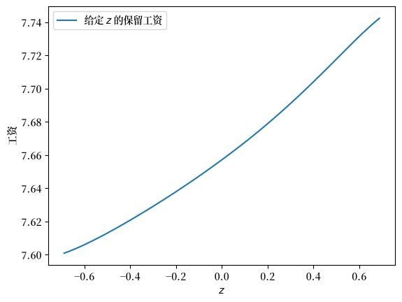
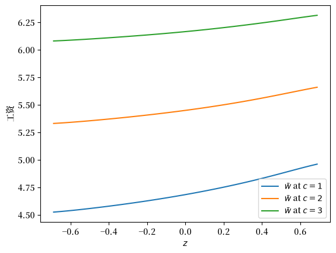
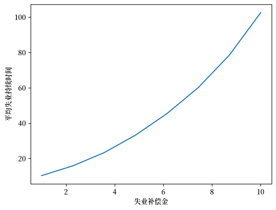
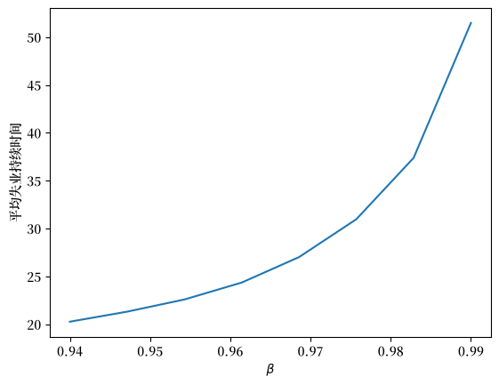

57. 工作搜寻 V：持续性与暂时性工资冲击#
GPU
本讲座是在配有GPU的机器上构建的——不过没有GPU也可以运行。
Google Colab 提供带GPU的免费套餐，使用方法如下：
点击右上角的”播放”图标
选择 Colab
将运行时环境设置为包含GPU
除了Anaconda中的内容外，本讲座还需要以下库：
!pip install quantecon jax
57.1. 概述#
在本讲座中，我们通过将工资报价分解为持续性和暂时性成分，扩展了McCall工作搜寻模型。
在基准模型中，工资报价在时间上是独立同分布的，这是不现实的。
在工作搜寻 III中，我们使用马尔可夫链引入了相关工资抽取，但同时也加入了离职因素。
这里我们采取不同的方法：我们通过一个AR(1)过程来建模持续性成分，再加上一个暂时性冲击，同时回到假设工作是永久性的（如基准模型中一样）。
这种持续性-暂时性分解方法：
对于建模实际工资过程更为现实
在劳动经济学中被广泛使用（例如参见 [MaCurdy, 1982]、[Meghir and Pistaferri, 2004]）
足够简单以便分析，同时又能捕捉工资动态的关键特征
通过保持工作永久性这一假设，我们可以专注于理解持续性和暂时性工资冲击如何影响求职行为和保留工资。
我们将使用工作搜寻 IV中介绍的带线性插值的拟合价值函数迭代方法来求解模型。
我们将使用以下导入：
import matplotlib.pyplot as plt
import matplotlib as mpl
FONTPATH = "fonts/SourceHanSerifSC-SemiBold.otf"
mpl.font_manager.fontManager.addfont(FONTPATH)
plt.rcParams['font.family'] = ['Source Han Serif SC']
import jax
import jax.numpy as jnp
import jax.random
import quantecon as qe
from typing import NamedTuple
57.2. 模型#
每个时期的工资由下式给出：
其中
这里 \(\{ \zeta_t \}\) 和 \(\{ \epsilon_t \}\) 都是独立同分布的标准正态随机变量。
这里 \(\{Y_t\}\) 是暂时性成分，\(\{Z_t\}\) 是持续性成分。
如前所述，劳动者可以：
接受当前工作机会，并在该工资水平永久工作，或
领取失业补偿金 \(c\) 并等待下一期。
价值函数满足贝尔曼方程：
在这个表达式中，\(u\) 是效用函数，\(\mathbb E_z\) 是给定当前 \(z\) 时下一期变量的条件期望。
变量 \(z\) 作为状态变量进入贝尔曼方程，这是因为它的当前值有助于预测未来工资。
57.2.1. 简化#
我们可以通过以下方法降低问题维度，显著提升计算效率：
首先，让 \(f^*\) 为延续价值函数，定义为：
现在贝尔曼方程可以写成：
结合上述两个表达式，我们看到延续价值函数满足：
为求解该函数方程，我们引入算子\(Q\)：
根据构造，\(f^*\) 是 \(Q\) 的不动点，即 \(Q f^* = f^*\)。
在较弱的假设下，可以证明 \(Q\) 是 \(\mathbb R\) 上连续函数空间上的一个压缩映射。
根据巴拿赫压缩映射定理，这意味着 \(f^*\) 是唯一的不动点，我们可以从任何合理的初始条件开始通过迭代 \(Q\) 来计算它。
求得 \(f^*\)后，这一搜索问题的解就是当接受工作的收益超过延续价值时停止求职，即：
对于效用函数，我们取 \(u(x) = \ln(x)\)。
保留工资是最后一个表达式中等式成立的工资：
我们的主要目标是求解该保留工资规则，并分析其性质与含义。
57.3. 实现#
让 \(f\) 作为我们对 \(f^*\) 的初始猜测。
在迭代时，我们使用拟合价值函数迭代算法。
特别地，\(f\) 和所有后续迭代值都作为向量存储在一个网格上。
这些点根据需要通过分段线性插值转换为函数。
\(Qf\) 定义中的积分通过蒙特卡洛方法计算。
以下是一个 NamedTuple，用于存储模型参数和数据。
默认参数值嵌入在模型中。
class Model(NamedTuple):
μ: float # 暂时性冲击对数均值
s: float # 暂时性冲击对数方差
d: float # 持续性状态位移系数
ρ: float # 持续性状态相关系数
σ: float # 状态波动率
β: float # 折现因子
c: float # 失业补助
z_grid: jnp.ndarray
e_draws: jnp.ndarray
def create_job_search_model(μ=0.0, s=1.0, d=0.0, ρ=0.9, σ=0.1, β=0.98, c=5.0,
mc_size=1000, grid_size=100, key=jax.random.PRNGKey(1234)):
"""
创建一个包含计算好的网格和抽取值的 Model。
"""
# 设置网格
z_mean = d / (1 - ρ)
z_sd = σ / jnp.sqrt(1 - ρ**2)
k = 3 # 标准差倍数
a, b = z_mean - k * z_sd, z_mean + k * z_sd
z_grid = jnp.linspace(a, b, grid_size)
# 生成并存储冲击
e_draws = jax.random.normal(key, (2, mc_size))
return Model(μ, s, d, ρ, σ, β, c, z_grid, e_draws)
接下来我们实现 \(Q\) 算子。
def Q(model, f_in):
"""
应用算子Q。
* model 是 Model 的一个实例
* f_in 是表示 f 的数组
* 返回 Qf
"""
μ, s, d = model.μ, model.s, model.d
ρ, σ, β, c = model.ρ, model.σ, model.β, model.c
z_grid, e_draws = model.z_grid, model.e_draws
M = e_draws.shape[1]
def compute_expectation(z):
def evaluate_shock(e):
e1, e2 = e[0], e[1]
z_next = d + ρ * z + σ * e1
go_val = jnp.interp(z_next, z_grid, f_in) # f(z')
y_next = jnp.exp(μ + s * e2) # 生成 y'
w_next = jnp.exp(z_next) + y_next # 生成 w'
stop_val = jnp.log(w_next) / (1 - β)
return jnp.maximum(stop_val, go_val)
expectations = jax.vmap(evaluate_shock)(e_draws.T)
return jnp.mean(expectations)
expectations = jax.vmap(compute_expectation)(z_grid)
f_out = jnp.log(c) + β * expectations
return f_out
这是一个计算 \(Q\) 不动点近似值的函数。
@jax.jit
def compute_fixed_point(model, tol=1e-4, max_iter=1000):
"""
计算 Q 不动点的近似值。
"""
def cond_fun(loop_state):
f, i, error = loop_state
return jnp.logical_and(error > tol, i < max_iter)
def body_fun(loop_state):
f, i, error = loop_state
f_new = Q(model, f)
error_new = jnp.max(jnp.abs(f_new - f))
return f_new, i + 1, error_new
# 初始状态
f_init = jnp.full(len(model.z_grid), jnp.log(model.c))
init_state = (f_init, 0, tol + 1)
# 运行迭代
f_final, iterations, final_error = jax.lax.while_loop(
cond_fun, body_fun, init_state
)
return f_final
让我们尝试生成一个实例并求解模型。
model = create_job_search_model()
with qe.Timer():
f_star = compute_fixed_point(model).block_until_ready()
0.4515 seconds elapsed
接下来我们将计算并绘制在(57.1)中定义的保留工资函数。
res_wage_function = jnp.exp(f_star * (1 - model.β))
fig, ax = plt.subplots()
ax.plot(
model.z_grid, res_wage_function, label="给定 $z$ 的保留工资"
)
ax.set(xlabel="$z$", ylabel="工资")
ax.legend()
plt.show()
findfont: Failed to find font weight normal, now using 600.
findfont: Failed to find font weight normal, now using 600.

注意保留工资随当前状态 \(z\) 单调递增。
这是因为更高的状态导致个体预测更高的未来工资，增加了等待的期权价值。
让我们尝试改变失业补偿金并观察其对保留工资的影响：
c_vals = 1, 2, 3
fig, ax = plt.subplots()
for c in c_vals:
model = create_job_search_model(c=c)
f_star = compute_fixed_point(model)
res_wage_function = jnp.exp(f_star * (1 - model.β))
ax.plot(model.z_grid, res_wage_function,
label=rf"$\bar w$ at $c = {c}$")
ax.set(xlabel="$z$", ylabel="工资")
ax.legend()
plt.show()

正如预期的那样，更高的失业补偿金在所有状态下都提高了保留工资。
57.4. 失业持续时间#
接下来我们研究平均失业持续时间如何随失业补偿金变化。
为简单起见，我们将初始状态固定在 \(Z_0 = 0\)。
@jax.jit
def draw_duration(key, μ, s, d, ρ, σ, β, z_grid, f_star, t_max=10_000):
"""
为单次模拟抽取失业持续时间。
"""
def f_star_function(z):
return jnp.interp(z, z_grid, f_star)
def cond_fun(loop_state):
z, t, unemployed, key = loop_state
return jnp.logical_and(unemployed, t < t_max)
def body_fun(loop_state):
z, t, unemployed, key = loop_state
key1, key2, key = jax.random.split(key, 3)
# 生成当前工资
y = jnp.exp(μ + s * jax.random.normal(key1))
w = jnp.exp(z) + y
res_wage = jnp.exp(f_star_function(z) * (1 - β))
# 检查是否最优选择是停止
accept = w >= res_wage
τ = jnp.where(accept, t, t_max)
# 如果不接受，更新状态
z_new = jnp.where(accept, z,
ρ * z + d + σ * jax.random.normal(key2))
t_new = t + 1
unemployed_new = jnp.logical_not(accept)
return z_new, t_new, unemployed_new, key
# 初始 loop_state: (z, t, unemployed, key)
init_state = (0.0, 0, True, key)
z_final, t_final, unemployed_final, _ = jax.lax.while_loop(
cond_fun, body_fun, init_state)
# 如果找到工作，返回最终时间，否则返回 t_max
return jnp.where(unemployed_final, t_max, t_final)
def compute_unemployment_duration(
model, key=jax.random.PRNGKey(1234), num_reps=100_000
):
"""
计算预期失业持续时间。
"""
f_star = compute_fixed_point(model)
μ, s, d = model.μ, model.s, model.d
ρ, σ, β = model.ρ, model.σ, model.β
z_grid = model.z_grid
# 为所有模拟生成密钥
keys = jax.random.split(key, num_reps)
# 对模拟进行向量化处理
τ_vals = jax.vmap(
lambda k: draw_duration(k, μ, s, d, ρ, σ, β, z_grid, f_star)
)(keys)
return jnp.mean(τ_vals)
让我们用一些可能的失业补偿金值来测试一下：
c_vals = jnp.linspace(1.0, 10.0, 8)
durations = []
for i, c in enumerate(c_vals):
model = create_job_search_model(c=c)
τ = compute_unemployment_duration(model, num_reps=10_000)
durations.append(τ)
durations = jnp.array(durations)
这是结果的图示。
fig, ax = plt.subplots()
ax.plot(c_vals, durations)
ax.set_xlabel("失业补偿金")
ax.set_ylabel("平均失业持续时间")
plt.show()

不出所料，当失业补偿金更高时，失业持续时间增加。
这是因为等待的价值随失业补偿金增加。
57.5. 练习#
练习 57.1
研究平均失业持续时间如何随折现因子 \(\beta\) 变化。
你的预期是什么？
结果是否符合你的预期？
解答 练习 57.1
这是一个解决方案：
beta_vals = jnp.linspace(0.94, 0.99, 8)
durations = []
for i, β in enumerate(beta_vals):
model = create_job_search_model(β=β)
τ = compute_unemployment_duration(model, num_reps=10_000)
durations.append(τ)
durations = jnp.array(durations)
fig, ax = plt.subplots()
ax.plot(beta_vals, durations)
ax.set_xlabel(r"$\beta$")
ax.set_ylabel("平均失业持续时间")
plt.show()

该图显示，更有耐心的个人倾向于等待更长时间才接受报价。